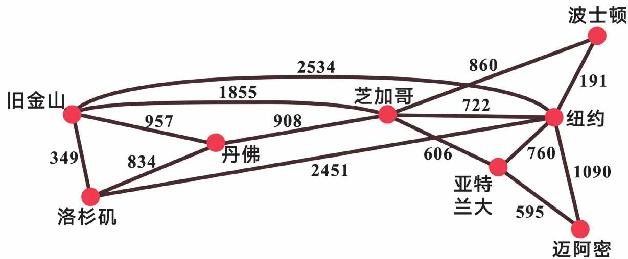
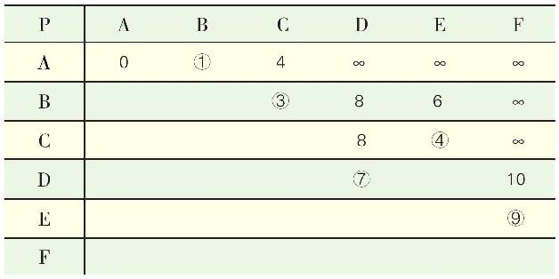

寻找最短的路
小文放下讲义，站起来做了几个瑜伽伸展动作。小文想，看起来，人与人之间的距离并没有想象的那么遥远。只要你愿意，认识地球上任意一个人也许并不是一件很困难的事。对了，如果她今天在地铁上有足够的勇气，她，王小文，当时就可以让“全民男神”和她自己之间的最短路径变成1。
小文正这样胡乱想着，妈妈带着两份外卖回来了。小文一边帮妈妈摆碗筷，一边问道：
“是不是这样，甄子丹的培根数其实是甄子丹通过一个中间人能认识演员培根的最短的一条路。”
“嗯，不完全正确，甄子丹有可能跟培根一起喝过咖啡也说不定呢。确切地说，在好莱坞图中，点表示的是电影演员，而点与点的连接关系并不表示认识，而表示共同合作过电影。”
“哦，这样啊。”
“如果把好莱坞图上的每条边的值设为1，此外再加上这个前提：到目前为止，甄子丹和培根还没有合作拍过电影的话，那么甄子丹与培根的最短路径是2。”
“那么厄多斯数呢？”
“有一个数学家叫陶哲轩。”妈妈没有正面回答。
“原来好像听你说过，华裔数学天才，菲尔兹奖获得者，不过你提他干什么？”
“厄多斯本身是认识陶哲轩的，但资料显示陶哲轩的厄多斯数是2。”
“表示他们两个认识，但并没有一起合作发表过论文？”
“是的，陶哲轩的厄多斯数是2，就是说陶哲轩曾经跟一位厄多斯数是1的数学家一起发表过论文，换句话说就是在‘数学家合作图’中，把每条边的值设为1的话，厄多斯和陶哲轩的最短路径是2。”
“我有点明白了，这些图模型都是把人看做离散的点，连接两个点的线可以表示互相认识，也可以表示相互合作过，也可以表示其他关系。”
“是的，完全正确。‘离散数学’研究的是离散的对象，‘图论’正是采用图的方法来描述和研究离散对象之间的联系。”
“上面几个图模型都涉及最短路径，看起来，六度空间似乎是人们猜想任意两个陌生人存在一条步长不超过6的最短的路。”
“是的，这是一个猜想，并没有完全得到证明。”
“虽然但丁说：走自己的路，让别人说去吧。但是大家还是对走捷径比较感兴趣。”
“是啊，你收快递不也是希望越快越好吗？”
“不是有‘罗曼慢递’吗？”
“嗯，记得你下回在网上买书时告诉店家用慢递服务啊。”
“这个……”
“在解决生活中一些实际问题的时候，我们可以给图上的每条边标上数字来表示类似时间、距离、费用什么的，这些数字可称为边的‘权值’，这样的图叫‘带权图’。很多问题都可以通过带权图来建模，比如：广州到迈阿密用什么样的航班组合费用最低，什么样的航班组合时间最短，从消防总队到火灾现场怎样走的距离最短，发出的电子邮件怎样最快到达目的地，这些问题都可以归结为求带权图的最短路径。”

一个带权图的例子——边上的数字表示城市之间的距离
“有求最长的路吗？”
“有的，这个问题我们后面会讲到，我们还是先看怎么求最短路径吧。”
“好的！”
“求带权图里两个顶点之间的最短路径可以采用不同算法，比较经典的是荷兰数学家迪杰斯特拉（E.W.Dijkstra）提出的一个算法，以他的名字命名，叫迪杰斯特拉算法。”
“迪杰斯特拉算法，这名字真难记。”
“多记几遍就念顺口了！很多算法都以人名来命名，比如计算机算法的鼻祖欧几里得算法也是以欧几里得的名字命名的。”
“先介绍一下迪杰斯特拉吧。”
“这也是一个曾经的计算机界牛人，获得过图灵奖。现在有人喜欢开玩笑地把程序设计员称为‘码农’，这个迪杰斯特拉应该算世界上第一批‘码农’之一。”
“码农，听说过，写计算机代码的。”
“不过说起来，这个迪杰斯特拉搞程序设计纯属歪打正着，他本行是搞数学和物理的。在学习理论物理的过程中，迪杰斯特拉发现许多问题都需要大量复杂的计算，于是决定学习计算机编程。他自掏腰包从荷兰跑到英国，参加了剑桥大学的一个程序设计培训班，如此这般，他深入学习了计算机编程。”
“看来，那个时候会计算机编程的人很少啊。”
“极为稀缺。那时计算机也是个稀罕玩意啊。不久，荷兰阿姆斯特丹数学中心正好需要一名程序设计人员，想聘请他为兼职程序员，迪杰斯特拉开始还有些犹豫。”
“为什么呢？”
“因为当时世界上还没有‘程序员’这个职业哦，不过最后他还是接受了。几年后，他要结婚了，他在结婚申请的‘职业’一栏上郑重其事写的是‘程序设计’，但阿姆斯特丹当局拒绝了。”
“他们还管这个。”
“他们不认为‘程序设计’是一种职业，迪杰斯特拉跟他们也解释不清楚，在那个年代，有几个政府部门的人见过计算机呢？没办法，他只好将职业一栏改为‘理论物理研究’。”
“哈哈。”
“看下面这张小镇地图，最西边的建筑是学校，小镇上几所房子之间有路相连，路边上标注的数字表示路径的长度，我们来看看如何求从学校出发到镇上其他地方的最短路径。”
为方便起见，将地图化简成下面的样子，A点代表小镇上的学校，B、C、D、E、F表示镇上其他几处房子。
第一步，标出各个点到A点的距离，B点到A点的距离是1，对B点来说这条路径的前续结点是A，因此给B点标上标记1（A），括号中的字母表示路径经过的结点，同样的道理，C点的标记是4（A），与A点不直接相连的用∞表示。
其中，B距离A最近，那么B点的标记1（A）就成了B点的永久标记，所谓永久标记——表示这个点到A点的最短距离已求出，这时C、D、E、F点上的标记是临时标记。
以C点为例，C点到B点的距离是2，这个距离加上B点的永久标记1，1+2=3，比C点的原标记4小，这就需要把C点的临时标记改为3。
标记是否更换的依据——以C点为例：
如果，
C点到B点的距离+B点的永久标记≥C点的原标记，
那么，
C点的标记不更换，
也就是说标记不可能越来越大。
接下来，其他点的标记依次进行更换：D换成8（A, B），E换成6（A, B），F仍是∞。
比较C、D、E、F当前的标记，C的标记最小，所以C点获得永久标记3（A, B）。
在C点的基础上，更换其他点的临时标记，E换成4（A, B，C），F仍是∞，对于D点来说，D与C点不相连，距离为∞，所以D点的标记仍是8（A, B）！
这一轮，E点获得永久标记。
D点获得永久标记。
最后，每个点都获得了永久标记，标记中的数字表示从A点出发到达各个点的最短路径，括号中的字母表示路径经过的结点。
除了画图，也可以用一个表来跟踪标记，方法是一样的。

P是具有永久标记的顶点集，带圆圈的数字为对应点的永久标记。